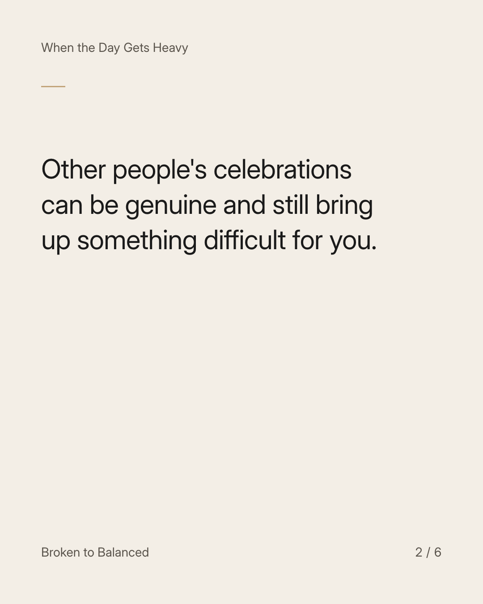
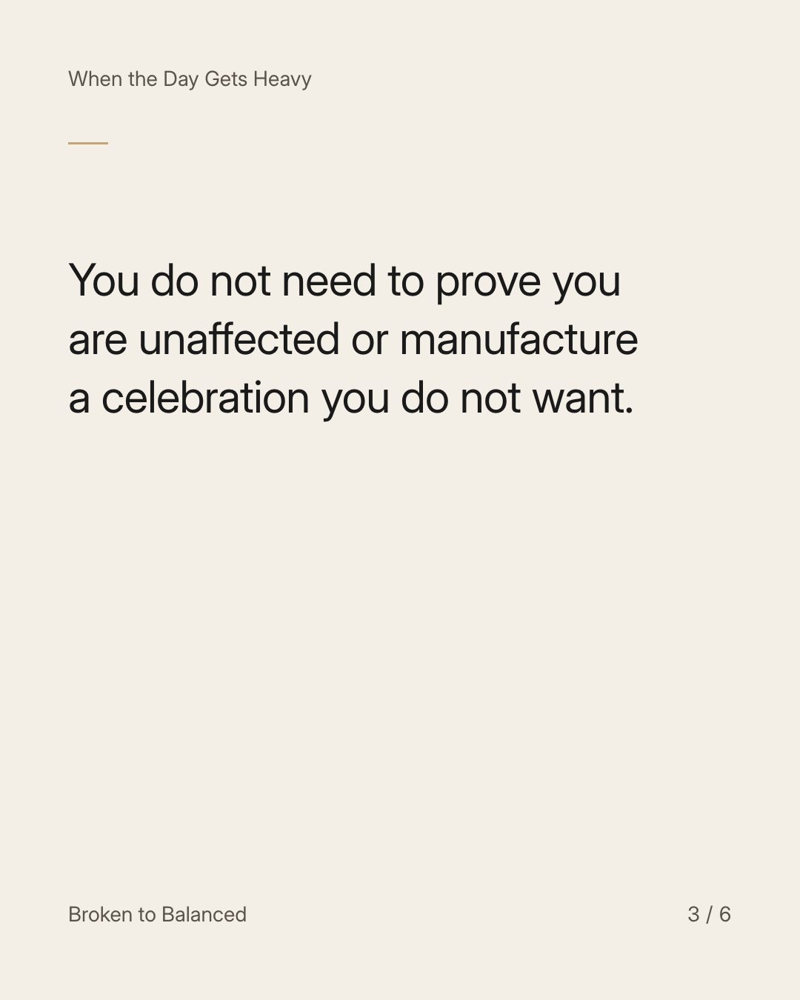
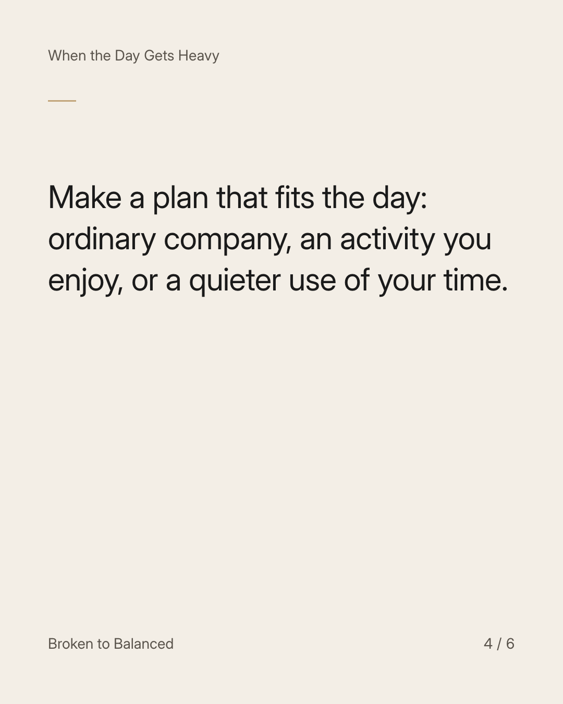
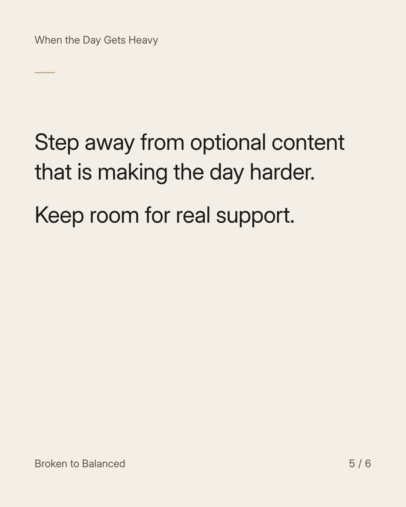
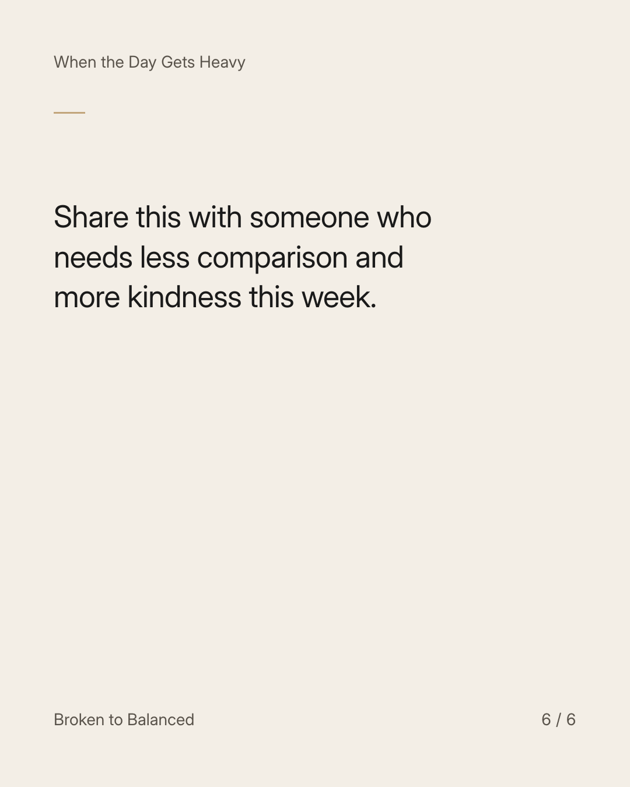

Exact text and accessibility text
A day full of couple posts is not a report on your worth.
Slide 1 of 6. A day full of couple posts is not a report on your worth.


Exact text and accessibility text
Other people's celebrations can be genuine and still bring up something difficult for you.
Slide 2 of 6. Other people's celebrations can be genuine and still bring up something difficult for you.


Exact text and accessibility text
You do not need to prove you are unaffected or manufacture a celebration you do not want.
Slide 3 of 6. You do not need to prove you are unaffected or manufacture a celebration you do not want.


Exact text and accessibility text
Make a plan that fits the day: ordinary company, an activity you enjoy, or a quieter use of your time.
Slide 4 of 6. Make a plan that fits the day: ordinary company, an activity you enjoy, or a quieter use of your time.


Exact text and accessibility text
Step away from optional content that is making the day harder. Keep room for real support.
Slide 5 of 6. Step away from optional content that is making the day harder. Keep room for real support.


Exact text and accessibility text
Share this with someone who needs less comparison and more kindness this week.
Slide 6 of 6. Share this with someone who needs less comparison and more kindness this week.
Exact caption
Plain-text fallback: select and copy the caption.